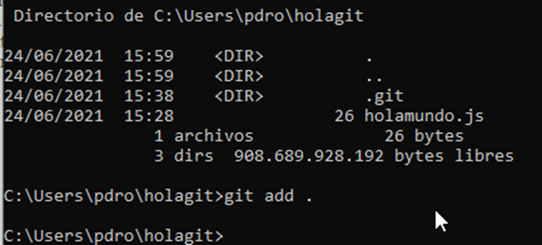
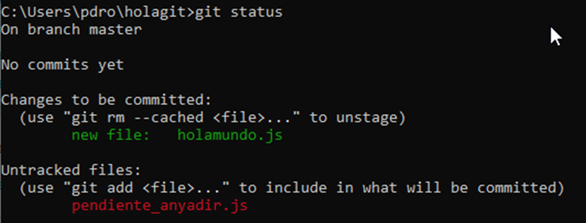
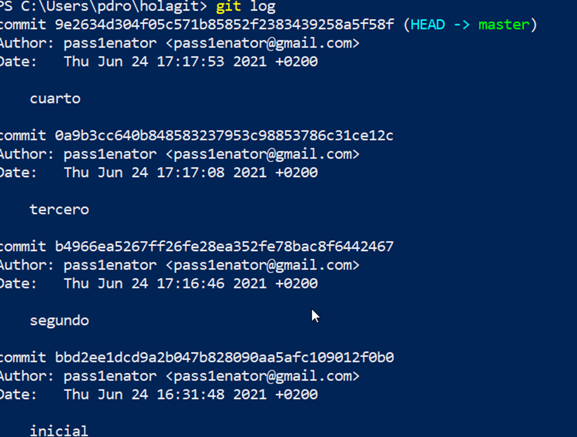

UD 5: IMPLANTACIÓN DE SISTEMAS SEGUROS DE DESPLEGADO DE SOFTWARE
2.1.2.- Primeros pasos.
Git se basa en la utilización de comandos desde el terminal para la gestión de proyectos. Las tareas más comunes en local que se realizan desde Git son:
- Crear el repositorio.
- Añadir ficheros al repositorio.
- Ver el estado de los ficheros.
- Realizar una confirmación/commit.
- Gestionar confirmaciones/commits.
- Ignorar carpetas y/o ficheros.
Crear un repositorio
Para iniciar o crear el repositorio, en la carpeta en la que se encuentra el proyecto ejecutar el comando:
git initEste comando crea una carpeta oculta .git que contiene todo lo necesario para la gestión del repositorio, como las instantáneas.
Añadiendo ficheros al repositorio
Ya sea para un proyecto existente o uno nuevo, se le ha de indicar al repositorio los ficheros o carpetas a gestionar por el repositorio. Para ello se utiliza git add, cada vez que se desee añadir un nuevo fichero o un conjunto se ha de ejecutar para que estos sean gestionados por Git. Un ejemplo de uso:
En fichero ya se encuentra en el repositorio, pero se encuentra en el área de trabajo, es decir preparado , pero los cambios no se encuentran en el repositorio.

Ver el estado de los ficheros
Es posible consultar el estado del proyecto en un instante para ver en qué situación se encuentran los diferentes ficheros que lo componen utilizando el comando git status.

En la imagen anterior se puede ver que existe un fichero pendiente para ser añadido al área de preparación para pasar al directorio git y otro que no es controlado por el repositorio.
Realizar commit
Para hacer los cambios permanentes, es decir pasar los ficheros desde el área de preparación al directorio git se ha de realizar una confirmación o “commit”, existen diferentes formas de ejecutar la confirmación, la más usual es:
git commit -m “mensaje”En el que con el parámetro -m y un texto permite describir la confirmación.
Si se vuelve a ejecutar git status se puede ver que el fichero pendiente de confirmar ha desaparecido:
Es necesario indicar la persona que realiza la confirmación, configurando git con el mail del usuario y el nombre del usuario que realiza el commit, en caso de que no se encuentre configurado.
Gestionar confirmaciones/commits
Los proyectos van creciendo añadiendo nuevos ficheros, cada cierto tiempo o punto se añaden nuevas confirmaciones, pero puede suceder que se desee por cualquier razón volver a una confirmación anterior.
Es posible ver los commits realizados con el comando:
git log
En la imagen anterior se puede ver que se han realizado cuatro 4 confirmaciones además de la inicial, en cada confirmación se puede ver la función resumen de los ficheros.
Para volver a una confirmación anterior ejecutar:
git checkout hashnterior para volver al segunEn el anterior para volver al segundo commit:
Si se listan los ficheros o se abre alguno de los modificados se puede observar como se ha vuelto a un estado anterior. Es posible volver a una confirmación posterior con el HASH al que se quiera cambiar.
Debes conocer
Descripción textual alternativa
Vídeo educativo de la Universidad Politécnica de Madrid, donde se introduce al uso del software de control de versiones Git. El vídeo forma parte de un tutorial sobre DevOps.
Ignorar carpetas y/o ficheros
Los proyectos suelen tener ficheros de código fuente, ficheros auxiliares como imágenes, fuentes, librerías o ejecutables generados. Solo algunos ficheros son interesantes para ser gestionados por el repositorio, y otros no se han de gestionar, por ejemplo los ejecutables generados en cada compilación o las librerías externas.
Para indicar a git que no gestiona ciertos ficheros o directorios, se ha de crear el archivo oculto .gitignore, en el que se especifican los ficheros y directorios excluidos.
Debes conocer
Repositorio en GitHub con ficheros .gitignore para la mayor parte de los lenguajes de programación y frameworks actuales.
Para saber más
A cerca del fichero .gitignore. Se recomienda visitar la página oficial de GIT en la que se puede consultar una amplia documentación.